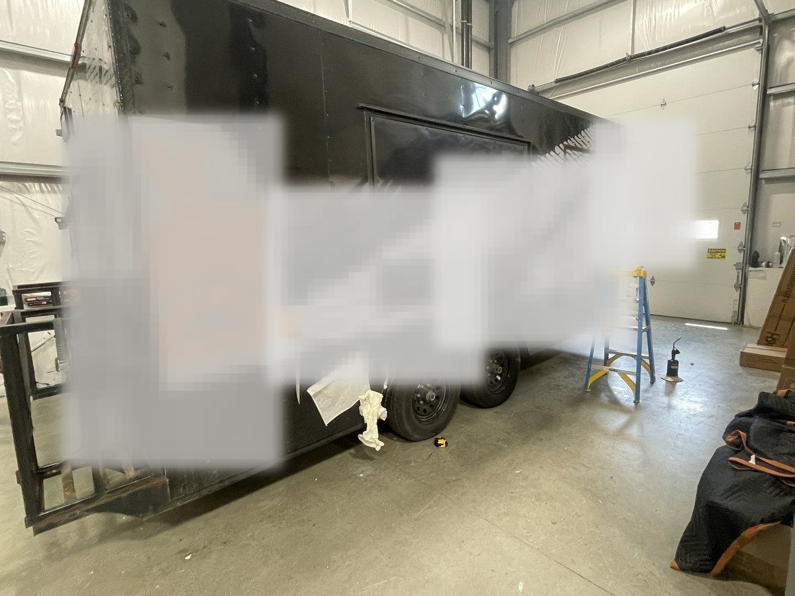

Vinyl lifting around trailer rivets
You wrapped the trailer. Two days later the film is tenting around the rivet heads and the edges along the rivet line are peeling. Here is why, and what to do about it when you are on your own.

The failure
- Rings of air or a little "tent" around each rivet head.
- Film lifting along the rivet line, then the edge starts to go.
- Wrinkles or fingers next to rivets where film was pushed around them.
- It looked fine when the vehicle left. It failed after it sat in the sun or the cold.
Why it happens
- Film bridged the rivet. It got laid over the head and never worked down around the base. Air stays trapped.
- Film was stretched cold into the rivet. Stretched film wants to go back to its old shape. It pulls off the rivet later.
- Dirty rivet base. Oil, road grime, old adhesive or wax sits right where the rivet meets the panel. Film can't grab it.
- Skipped or rushed post-heat. The film maker's TDS tells you how to lock stretched areas. Skip it and the film lets go.
- Wrong film for the job. Not every film is rated for rivets and corrugation. Check the TDS before the job, not after.
The fix
- Stop and look at every rivet line. Mark the bad ones with a wax pencil or a small piece of tape off the film. Don't chase them one by one yet.
- Decide: fix or replace. If the film is creased, overstretched, or the print looks thin or discolored at the rivet, cut it out and patch it. Don't try to save it.
- Release the air. Use an air-release tool or a fine pin at the edge of the bubble, not the middle of the rivet head. Push the air out toward the hole.
- Work it down, and follow the TDS for heat. Warm the film the way the film maker says, then work it down around the base with a rivet brush or rivet tool. Small circles. Go around the whole head.
- Patch if needed. Clean the area, cut a patch from the same film, line it up with the print or panel line, and work it down the same way.
- Post-heat the rivet line. Follow the TDS for post-heat. Every rivet, not just the ones that failed.
- Check again later. Look at the rivet lines again before the vehicle leaves and after it has sat. Rivets tell on you late.
Stop it next time
- Clean rivet bases with the cleaner the film maker's TDS calls for. Get into the base, not just the flat panel.
- Lay the panel, then work rivets from the center of the panel out. Don't stretch the film to reach a rivet.
- Rivet brush plus heat per the TDS. No thumb-pushing cold film around heads.
- Post-heat every rivet line. Make a note so you don't skip it when you are tired and alone on the job.
Heat, stretch and post-heat: follow the film maker's TDS (technical data sheet) for the exact film on the job. 3M, Avery Dennison and BriteLine all publish one. This page does not give numbers on purpose.
Don't learn this alone
My trainer left, and I was alone on jobs I wasn't ready for. WRAP 911 is the help I never had.
Get WRAP 911 on the App Store Open the free trainerSee what's in it
Free to download on the App Store. You can also open a free preview of the trainer on the web.